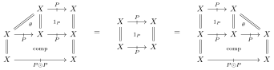
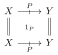
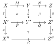
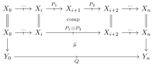

ModalTT: A Type Theory for Modal Virtual Double Theories
Topos Institute Berkeley Seminar · August 18, 2026
I will be talking about a type theory and accompanying DSL for specifying modal virtual double theories.
Some familiarity with virtual double categories (VDCs) will be assumed. Very little type theory background will (hopefully) be required.
This project is ongoing and there is still much work to be done on both the implementation and type theory. Please be gentle with me. :)
The next 50 minutes of our lives should look roughly as follows:
CatColab [1] is a collaborative modelling platform based on categorical logic.
DoubleTT [2] is a component of CatColab which facilitates model composition using a type theory for models of double theories.
The theory for a particular logic defines the “shape” of its models. Formally:
Example: the theory of categories is a unital VDC with a single object and no (nonunital) tight/loose arrows.
Example: the theory of monoidal categories is a unital VDC, equipped with “the” list monad \(\mathrm{List}\), generated by an object \(X\) and a tight morphism \[\otimes: \mathrm{List}(X) \to X\] (These are equipped with the usual axioms making \(\otimes\) a monoidal product.)
Example: the theory of promonads is a unital VDC with an object \(X\), a proarrow \(P : X \mathrel{\mkern 3mu\vcenter{\hbox{$\scriptstyle+$}}\mkern-13mu{\to}}X\) such that the loose composite \(P \odot P\) is defined and is equal to \(P\), and a virtual cell \(\theta\):
such that the cell equalities below are satisfied:

Currently the theories available in DoubleTT are constructed directly in Rust, rather than a dedicated language. Users are limited to a small handful of pre-defined options unless they manually introduce their own using CatColab’s internal data structures.
Goal: allow the user to easily define their favorite theory in a small DSL by
Idea: annotate the user-specified theory with types, such that a theory which successfully typechecks is always valid.
Observation: user-defined axioms can equate any pair of cells with the same boundary, so this amounts to a type theory for the internal language of VDCs.
Remark: as we saw for the theory of promonads, theories may also equate (pro)arrows, so even checking compatibility of cell boundaries is nontrivial.
Hayato Nasu’s past work [3] on a type theory for (fibrational, cartesian) VDCs guided the early stages of this project.
The correspondence between constructs in a VDC and the syntax of Nasu’s type theory is outlined below:
| VDC Construct | Syntactic Form | Example |
|---|---|---|
| Object | Type | \(X \Leftrightarrow X \text{ type}\) |
| Product | Context | \(\prod_{i=1}^n X_i \Leftrightarrow x_1 : X_1, \dots, x_n : X_n \text{ ctx}\) |
| Morphism | Term | \(s : \Gamma \to X \Leftrightarrow \Gamma \vdash s : X\) |
| Proarrow | Protype | \(P :\Gamma \mathrel{\mkern 3mu\vcenter{\hbox{$\scriptstyle+$}}\mkern-13mu{\to}}\Delta \Leftrightarrow \Gamma ; \Delta \vdash P(s ; t) \text{ protype}\) |
| Proarrow path | Procontext | \(\Gamma_0 \mathrel{\mkern 3mu\vcenter{\hbox{$\scriptstyle+$}}\mkern-13mu{\to}}\Gamma_1 \mathrel{\mkern 3mu\vcenter{\hbox{$\scriptstyle+$}}\mkern-13mu{\to}}\cdots \mathrel{\mkern 3mu\vcenter{\hbox{$\scriptstyle+$}}\mkern-13mu{\to}}\Gamma_n \Leftrightarrow \rho_1 : P_1, \dots, \rho_n : P_n \text{ proctx}\) |
| (Globular) Cell | Proterm | \(\mu : P_1, \dots, P_n \mathrel{\mkern 3mu\vcenter{\hbox{$\scriptstyle+$}}\mkern-13mu{\to}}Q \Leftrightarrow \Gamma_0 ; \dots ; \Gamma_n \vert \rho_1 : P_1, \dots, \rho_n : P_n \vdash \mu : Q\) |
The (tight) identity cell

…is represented by the proterm
\[x : X, y : Y \vert p : P(x ; y) \vdash p : P(x ; y)\]
The virtual composite cell

…is represented by the proterm
\[ \begin{aligned} x : X, y : Y, z : Z \vert m : M(x ; y), n : N(y; z) \vdash\\ \gamma (\alpha(m), \beta(n)): R(s(f(x)) ; t(g(z))) \end{aligned} \]
For this type theory to model the internal language of fibrational VDCs it needs to capture restriction cells and their universal property.
Given a proarrow \(P : Y_0 \mathrel{\mkern 3mu\vcenter{\hbox{$\scriptstyle+$}}\mkern-13mu{\to}}Y_1\) and tight morphisms \(f_i : X_i \to Y_i\), the protype \[ x_0 : X_0 ; x_1 : X_1 \vdash P(f_0(x_0), f_1(x_1)) \] represents the restriction of \(P\) along \(f_0\) and \(f_1\).
We recover the corresponding restriction cell
with the proterm \[ x_0 : X_0, x_1 : X_1 \vert p : P(f_0(x_0), f_1(x_1)) \vdash p : P(f_0(x_0), f_1(x_1)), \] since the tight identity cell of a restriction proarrow corresponds uniquely with the restriction cell via the universal property.
The type theory can be extended with type formation, introduction, and elimination rules for loose composites.
The universal property for composites says that each cell \(\mu\) induces a unique \(\widetilde{\mu}\) such that
The type theory can be extended with type formation, introduction, and elimination rules for loose composites.
…is equal to the virtual composite

Like restriction, we encode the universal property in the internal language using a normal form.
Namely, the \(\beta\)/\(\eta\)-reduction rules (judgments relating a type’s constructor(s) and eliminator(s)) for composites precisely capture this universal property.
Nasu’s type theory offers a strong foundation, but it lacks some characteristics that are important to our use case:
To address the problems outlined above, we have adapted Nasu’s type theory in a number of ways:
Users specify the generators (objects, tight/loose arrows, and cells) of their theory:
Objects
obj X
obj [Y, Z]Arrows and proarrows
fun f : X -> Y
pro P : X => YCells
cell α : [P, Q] => (List R) | f -> id YUsers can declare equalities of proarrows and of proterms (virtual cells), which define the axioms of the theory:
Proarrow Axioms
pro_axiom P := P * PProterm Axioms (this is where the magic happens)
-- Promonad axioms
axiom [x0 : X, x1 : X] | [p : P[x0, x1]] |- θ (x0) * p := p
axiom [x0 : X, x1 : X] | [p : P[x0, x1]] |- p := p * θ (x1)-- Can apply the list monad or use its (primitive) structure proterms
axiom [x : X, y : Y] | [p : (List P)[x, y]] |- μ List [(List (η List P)) [p]] := p -- Loose composites are destructured via let binding (more on this soon)
axiom [x0 : X, x1 : X] | [...] |-
let ([p : P[x0, x1], q : Q[x1, x2]] = α [...] * β [...]) in γ[p, q] := ...(if he is not already doing The Demo™ you should politely remind him to do The Demo™)
We adapt Nasu’s type theory by introducing modalities and broadening the expressive power of the generator symbols.
To match the implementation, we also rely less heavily on substitution (which is badly behaved in the presence of non-syntactic equalities.)
The signature \(\Sigma\) determines the structures of a theory \(\mathbb{T}_\Sigma\) by specifying finite sets of generators:
Object symbols \(\mathcal{T}_\Sigma\)
Arrow symbols \(\mathcal{F}_\Sigma\)
Proarrow symbols \(\mathcal{P}_\Sigma\)
Cell symbols \(\mathcal{C}_\Sigma\)
Modality symbols \(\mathcal{M}_\Sigma\)
These generator symbols are closed under modal application (the sets of arrows and cells are also populated with the monad structure for each \(L \in \mathcal{M}_\Sigma\)).
The complete sets of arrows (resp. proarrows) are then generated from the modal closures by including identities (resp. loose units) and composites (resp. loose composites).
\[ \begin{aligned} \text{Type} & ::= X \text{ type}\\ \text{Context} & ::= \Gamma \text{ ctx}\\ \text{Term} & ::= \Gamma \vdash s : X\\ \text{Protype} & ::= \Gamma_0 ; \Gamma_1 \vdash P \text{ protype}\\ \text{Procontext} & ::= \Gamma_0 , \dots , \Gamma_n \vert \Omega \text{ proctx}\\ \text{Proterm} & ::= \Gamma_0, \dots, \Gamma_n \vert \Omega \vdash \mu : P \end{aligned} \]
A type is (just) an object generated by the signature:
\[ \begin{aligned} x &\in \mathrm{Var}_{\mathrm{Type}}\\ X &\in \widetilde{\mathcal{T}}_\Sigma\\ \Gamma &\in \mathrm{Context} ::= (x : X) \end{aligned} \]
Note: our theories are not necessarily cartesian, so our (term) contexts are unary [4], containing a single variable binding.
\[ \begin{aligned} x &\in \mathrm{Var}_\mathrm{Term}\\ f &\in \widetilde{F}_\Sigma\\ s &\in \mathrm{Term} ::= x \vert f(s) \end{aligned} \]
Terms are equipped with a meta-theoretic variable substitution, defined in the obvious way:
\[ t[s/x] := \begin{cases} s & \text{if } t = x\\ f(t'[s/x]) & \text{if } t = f(t') \end{cases} \]
(As usual, we assume that \(x\) is not a variable in \(s\) to avoid variable capture.)
\[ \begin{aligned} s_0, s_1 & \in \mathrm{Term}\\ P & \in \hat{\mathcal{P}}_\Sigma\\ \underline{P} &\in \mathrm{Protype} ::= P(s_0, s_1) \end{aligned} \]
For \(n \geq 0\): \[ \begin{aligned} \Gamma_i &\in \mathrm{Context}\\ \underline{P_i} &\in \mathrm{Protype}\\ p_i &\in \mathrm{Var}_\mathrm{Proterm}\\ \overline{\Gamma} \vert \Omega &\in \mathrm{Procontext} ::= \Gamma_0, \dots, \Gamma_n \vert p_1 : \underline{P_1}, \dots, p_n : \underline{P_n} \end{aligned} \]
Note: both components of our procontexts are ordered (in the sense of ordered linear1 logic [5,6]).
\[ \begin{aligned} p_i &\in \mathrm{Var}_\mathrm{Proterm}\\ f, g &\in \hat{\mathcal{F}}_\Sigma \\ s_i &\in \mathrm{Term} \\ \alpha &\in \hat{C}_\Sigma(P_1, \dots, P_n \Rightarrow Q \vert f \to g)\\ \mu &\in \mathrm{Proterm} \\ &::= p \\ &\hspace{0.5em}\vert \alpha \langle s_0, \dots, s_n \rangle (\mu_1, \dots, \mu_n) \\ &\hspace{0.5em}\vert \mu_1 \odot \mu_2\\ &\hspace{0.5em}\vert \text{let } [p_1 : \underline{P_1}, p_2 : \underline{P_2}] = \mu_1 \text{ in } \mu_2\\ \end{aligned} \]
Note: the underlying VDC semantics of the type theory is still a work-in-progress.
We define a modal, fibrational VDC (with composites) \([\![ \mathbb{T}_\Sigma ]\!]\) as follows:
are proterms \[ \begin{aligned} \Gamma_0, \dots, \Gamma_n \vert p_1 : P_1(s_0, s_1), \dots, p_n : P_n(s_{n-1}, s_n) \vdash\\ \mu : Q(t_0[f_0(s_0)/y_0], t_n[f_n(s_n)/y_n]). \end{aligned} \]